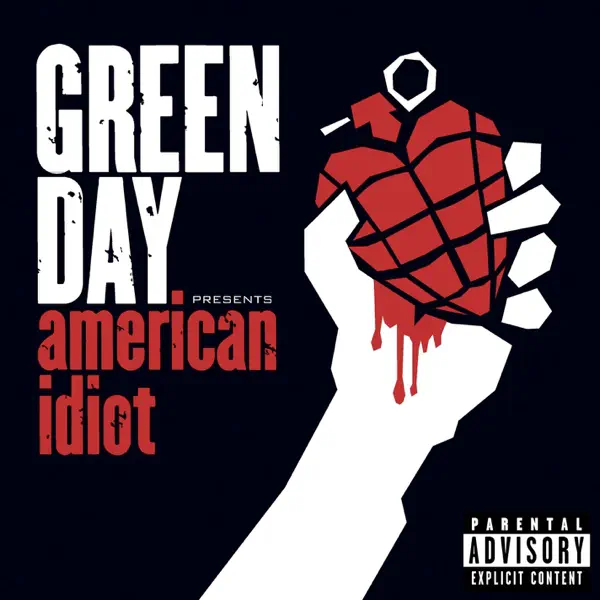

Classic Review
American Idiot
Green Day

By the early 2000s, Green Day could have kept making short, fast pop-punk records forever. Instead, they made a punk rock opera. American Idiot follows a restless kid called the Jesus of Suburbia as he leaves home, falls in with the reckless St. Jimmy and tries to figure out who he is.
The band wrote it as a reaction to the politics and nonstop news coverage of the mid-2000s, and recorded the songs in the order they appear on the album. Two of them, "Jesus of Suburbia" and "Homecoming," run more than nine minutes each, stitched together from shorter movements like a stage musical.
A punk band proving it could tell a whole story without slowing down.
It worked. The album went straight to No. 1 on the Billboard 200, and "Boulevard of Broken Dreams" won the Grammy for Record of the Year. Producer Rob Cavallo would go on to help make The Black Parade two years later, and you can hear the family resemblance.